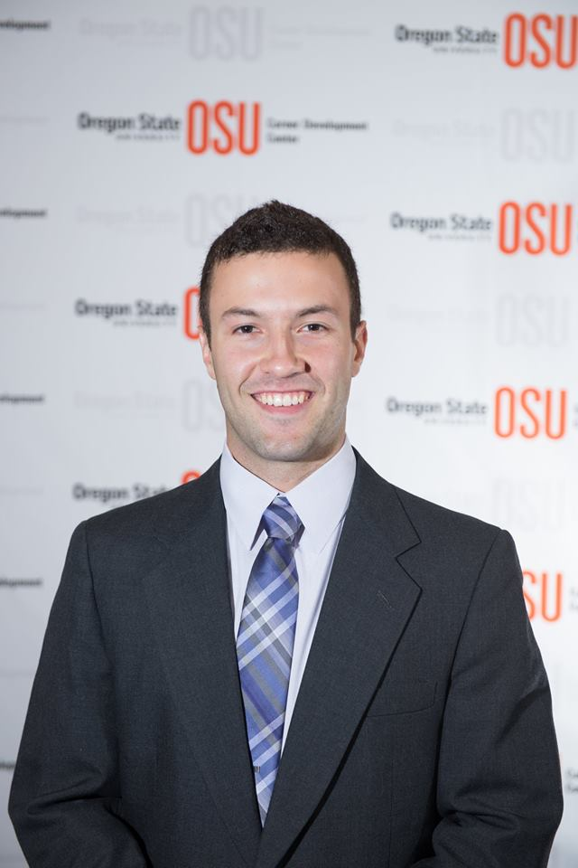
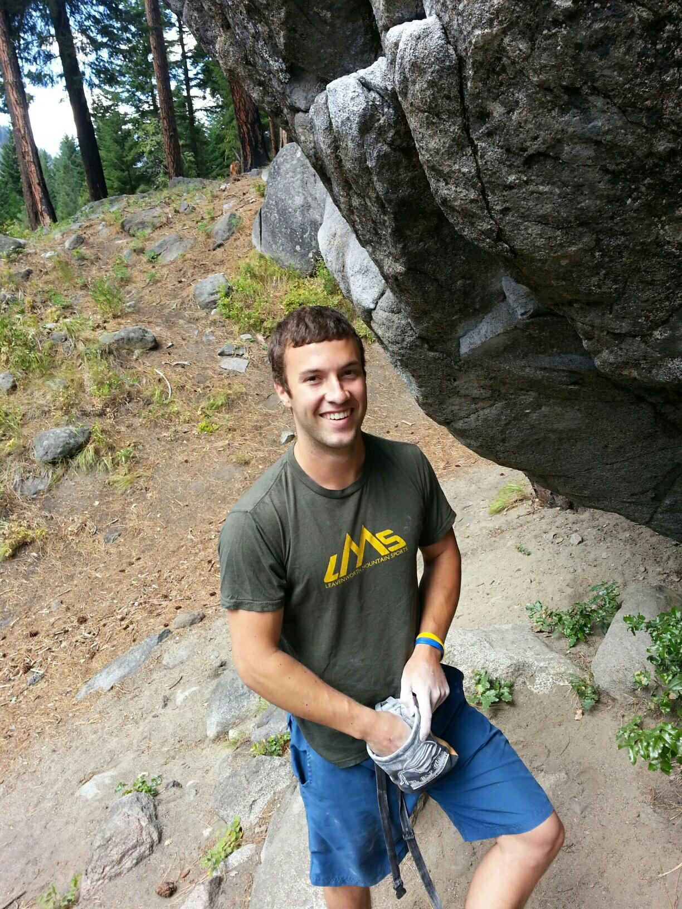
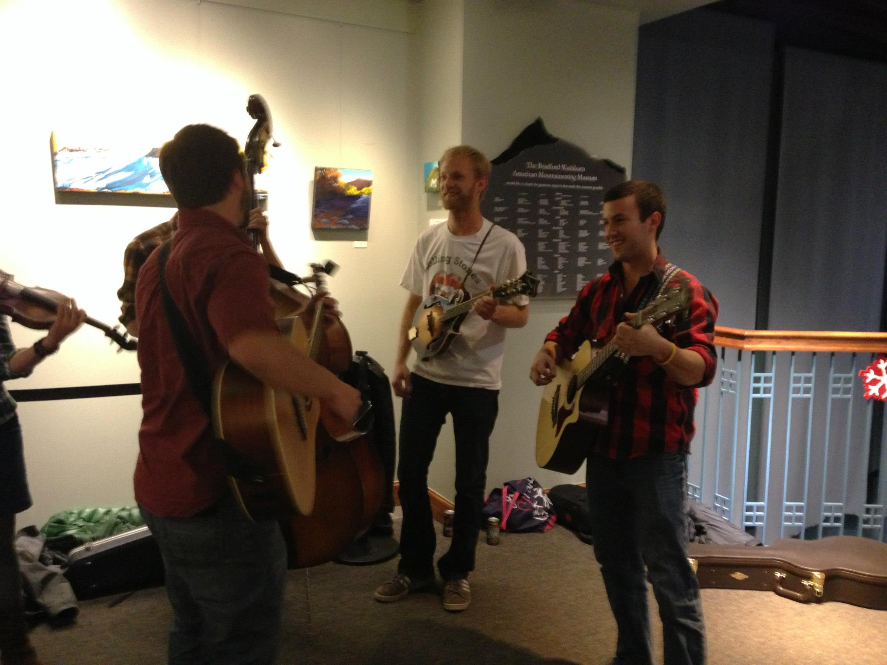
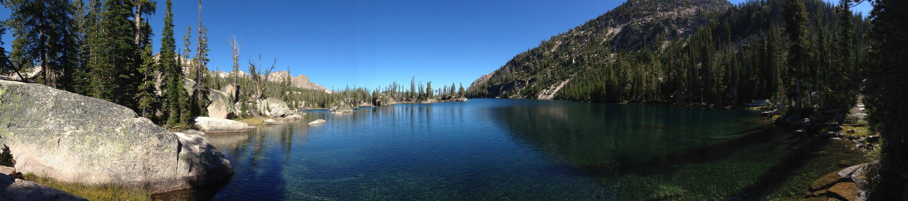

Benjamin Fields
-

My name is Benjamin Fields and I am a graduate student at Oregon State University located in Corvallis, Oregon. I am 25 years old and originally from Boise, Idaho. I came to the state of Oregon to complete my Bachelors in Industrial and Manufacturing Engineering. After completing my undergrad I knew that I wanted to continue my education and pursue a graduate degree, which brings me to where I am today.
I am in my second year of my masters pursuing a M.S. in Industrial Engineering focusing on information systems with a minor in Computer Science. I am advised by Dr. David Porter and co-advised by Dr. Eugene Zhang. My Research is focused on data driven approaches and algorithms to automatically discover process simulation models in the context of manufacturing assembly systems.
I have become fascinated by the overlap of Computer Science and Industrial Engineering and hope to continue my studies in a professional setting in the years to come. I am also very interested in the use of computer graphics in an engineering setting for applictions such as CAD, process simulation, mechanical analysis and other related problems. On a less technical note, I love the outdoors, rock climbing, music, hockey and programming. Thanks for stopping by and feel free to reach out if you have any questions.


A PDF of my resume can be found Here
-
Current Position:
Oregon State University
Title: Graduate Research Assistant
Description: Design and development of an open source software suite for the support of the GTFS-ride data standard. A feed validation tool was built using python and can be found Here. A Webhub suite is being developed to allow users to upload ridership data into a central database and perform analysis with reports generated from the uploaded data. This platform is built using Java, HTML, CSS, JavaScript, and PostgreSQL .
Duration: April 2017 - Present
Location: Corvallis, ORProfessional Experience:
Oregon State University
Title: Graduate Teaching Assistant
Description: Assist in the running of IE 415/515 - Simulation and Decision Support Systems. Tasks involved leading lab sections and developing lab exercises. This class uses Rockwell Collin's Arena Simulation software as well as Oracle's CrystalBall for predictive modeling , forecasting, simulation, and optimization.
Duration: January 2017 - April 2017
Location: Corvallis, OROregon State University
Title: Graduate Research Assistant
Description: Capacity analysis of the Cab-In-White assembly system at Daimler Trucks North America's Portland assembly plant. This task involved the modeling of the production system in Rockwell Collin's Arena simulation software and using VBA integration paired with statistical analysis to evaluate capacity.
Duration: January 2016 - December 2016
Location: Corvallis, ORTillamook County Creamery Association
Title: MECOP Engineering Intern
Description: Provide support for capital asset planning, facility layout, process planning, process analysis, ROI Analysis, and continuous improvement initiatives. This work was focused on the creation of a new assembly line to utilize trimmed/cut cheese. This project involved communication with teams across the nation to provide quoting, facility layout, and an analysis of financial return.
Duration: April 2015 - September 2015
Location: Tillamook, ORSilicon Forest Electronics
Title: MECOP Engineering Intern
Description: Observe everyday tasks and create new and improved processes to increase productivity. Common tasks involved time studies, tool fixture design, process improvement, 5S, creation of standard operating procedures, and root cause analysis. One highlight of this work was reducing roughly 10 minutes of rework per job on a unit being produced for one of the most important customers at the time.
Duration: April 2014 - September 2014
Location: Vancouver, WAOregon State Indoor Climbing Center
Title: Supervisor
Description: Tasks consisted of supporting the floor staff in maintaining participant safety and leading technical courses in climbing technique and safety.
Duration: January 2012 - September 2013
Location: Corvallis, OROregon State Indoor Climbing Center
Title: Floor Staff
Description: Tasks consisted of observing everyday participants to maintain safety and helping in the teaching of classes.
Duration: January 2011 - January 2012
Location: Corvallis, OR -
Graduate School:
Oregon State University
Degree: M.S. in Industrial Engineering with a minor in Computer Science
GPA: 3.65
Expected Graduation Date: June 2018
Duration: April 2016 - June 2018Undergraduate:Oregon State University
Degree: B.S. Dual Degree in Industrial Engineering and Manufacturing Engineering
GPA: 2.98
Graduation Date: June 2016
Duration: September 2010 - December 2015Professional Certifications:IISE Six Sigma Green Belt
Date: October 9,2015Extracurricular Activities:Toastmasters International
Club Positions: V.P. of Membership
Certifications: Competent Communicator (CC)
Awards: Best Speaker - 5, Best Table Topics- 8, Best Evaluator- 7
Competition: 3rd place at Area 33 Table Topics Contest
Duration: September 2015 - Present -
Highly Proficient:
Programming Languages: C++, C, Python, Java, HTML, CSS, JavaScript
APIs: OpenGl, GLSL, OpenMP, GLFW, GLUT
Software Packages: Visual Studio, Xcode, Eclipse, Arena Simulation Software,Excel, CrystalBall, Statgraphics, Microsoft Word, Microsoft PowerPoint, Microsoft Visio , Cmake, Vim, GitHub
OS: Windows, MAC
Skills: Computer Programming, Discrete Event Simulation, Design of Experiments, Computer Graphics Programming, Teaching, Public Speaking, Continuous Improvement, Time Management, Lean Manufacturing, Time studies, SSHAverage Proficiency:Programming Languages: Haskell, C#, VBA , Bash, PostgreSQL
APIs: Tensorflow,OpenCl
Software Packages: Solidworks, AutoDesk suite, Matlab, Microsoft Access, Microsoft Project, LINDO/LINGO (linear programming), PgAdmin
OS: Linux
Skills: Machine Learning, Deep Learning, Data Mining, Facility layout, Physically Based Rendering, Data and Computer CommunicationsSome Exposure:Programming Languages: Assembly, Objective-C, Swift, R, Lua, Cuda
APIs: Theano, Direct3D, HLSL, Qt-Creator
Software Packages: R-Studio, Renderman,Qt, Wireshark, Intel Parallel Studio
Skills: Mobile Development, CFD -
Aside from all the technical experience and education let me share a little about myself. I am 25 years old and from Boise, Idaho and came to Corvallis, Oregon in 2010 to begin my college career. I have since completed my B.S. and started in on a M.S. which I am in my second year. I am studying Industrial Engineering and Computer Science and have become captivated by the combination. I truly enjoy programming and the process of solving a wide range of problems. I have a particular interest in Computer Graphics applications in the engineering domain and hope I can find myself in this problem space professionally, but thats not all. Let me share a little bit more about who I am.
Hockey:I love playing most sports but the one that has been the most important in my life has been hockey. I have been on skates since I could walk and started playing hockey soon after. I played all through grade school and high school and continue to play recreationally when I get the opportunity as there is no rink in Corvallis. I would probably have to say that my favorite NHL teams are the Pittsburgh Penguins and the Colorado Avalanche.
Climbing:I love climbing. I started climbing at a very young age and have since climbed all over the West. Sport climbing, trad climbing, bouldering, you name it I enjoy all of it. Climbing has actually played a recreational and professional role in my life as I was a climbing instructor for Oregon State for a few years. I hope to continue to climb for many years to come. My favorite place to climb is in Leavenworth, Washington. In the image on the left you can see me chalking up while bouldering in Leavenworth.
Music:Music has been a part of my life since I was a kid. I started in music on the violin in orchestra, which was soon followed by the guitar and the piano after that. I find both the creation and science of music fascinating. There are so many languages in the world, but no matter where someone is music is always understood. You can see an image of me playing guitar with my brother's band at an informal gig at the mountaineering museum in Golden, CO.
Outdoors:Nature is truly amazing and luckily I am in the Northwest, which has some of the greatest scenery in the country in my opinion. I try to get out and enjoy it as much as possible doing things such as backpacking, fishing, white water rafting, snow sports, camping, running, or really anything outside. While technology is great, I think it's important to look away from the screen every now and then to enjoy the best engineering we know...Nature. The image above is from Imogene Lake in the Sawtooth Mountains located in central Idaho.
Programming:I have come to truly enjoy computer programming and the process of thinking through a problem and systematically creating a solution. You can often find me reading text books on various topics in computer science trying to learn as much as I can. I think CS will play a very important role in the years to come and knowing how these technologies work will be crucial. It is already starting to change how we live our lives on a daily basis. While my grandparents may have walked miles to school over mountains and through snow, I will likely have to tell my grand children how I had to MANUALLY drive my own car to school and MANUALLY shift the gears. How ancient :)
-
Primary Email: Fieldsbe@oregonstate.edu
Secondary Email: BenFields724@gmail.com
Phone: 541-224-3874
A pdf of my resume can be found Here